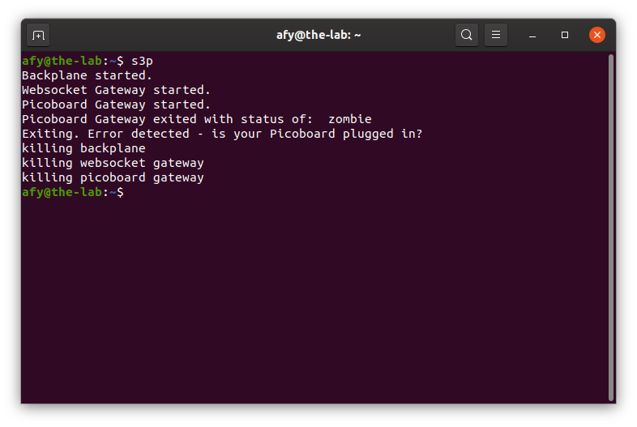
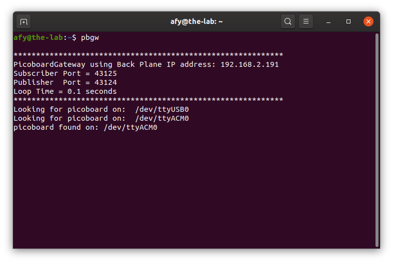
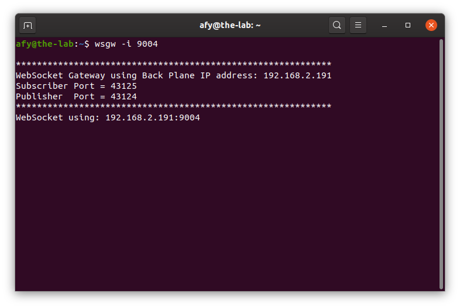

Starting The OneGPIO Server For The Picoboard
Plug the Picoboard into a USB connector on your computer
Next, open a terminal window and type:
s3p

This command automatically starts the Python Banyan Backplane, and both the Banyan WebSocket and Banyan Picoboard Gateways.
If you remove the USB cable after starting s3p, or if you have forgotten to plug in the cable before starting s3p, you will see something similar to the following:

Here, s3p detected that the Picoboard Gateway was not running, and therefore shut down all of its processes.
Visit "A Peek Under The Hood" for more information about the Backplane and Gateways.
Troubleshooting
Only use a high-quality USB cable. Verify that you properly connected the cable to both your computer and the Picoboard. If s3p detects an error in either the backplane or either of the two gateways, it will shut itself down.
To troubleshoot why this may be happening, open a new terminal window and type:
backplane
You should see a similar output, as shown below, indicating that the backplane is running correctly. The IP address does not need to match the one shown.

Next, open an additional terminal window and type:
pbgw

You should see a window similar to the one shown above. Here, the screenshot indicates that there are two active COM ports. The Picoboard Gateway checks all of the active COM ports until it finds a connected Picoboard.
Next, open a third terminal window and type:
wsgw -i 9004

You should see a window similar to the one shown above.
If there are exceptions or errors in any of the terminal windows, create an issue against the s3-extend distribution pasting any error output into the issue comment.
Copyright (C) 2019-2020 Alan Yorinks All Rights Reserved